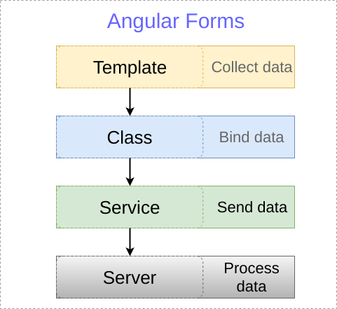

Handling Forms in Angular Apps
Created for
Iva E. Popova, 2016-2018,

Angular Forms Basics
Angular Forms Basics
Overview
{kind=link}
The two ways
- Template Driven Forms (TDF)
- mostly on the template side
- Reactive Forms (RF)
- mostly on the class side
Template Driven Forms
Template Driven Forms
Overview
- Template driven forms (TDF) follows the approach for working with forms similar in Angular 1.x
- As the names suggest, most of the logic, like creating form controls, forms, and defining validations is written inside the template in a declarative manner.
The steps
- Add the form HTML
- Bind the data
- Track state and validity
- Provide visual feedback
- Display error messages
- Post data to the server
The HTML and style of the form
Styling forms
With Bootstrap4
<form>
<div class="form-group">
<label for="exampleInputEmail1">Email address</label>
<input type="email" class="form-control" id="exampleInputEmail1" aria-describedby="emailHelp" placeholder="Enter email">
<small id="emailHelp" class="form-text text-muted">We'll never share your email with anyone else.</small>
</div>
<div class="form-group">
<label for="exampleInputPassword1">Password</label>
<input type="password" class="form-control" id="exampleInputPassword1" placeholder="Password">
</div>
<div class="form-check">
<input type="checkbox" class="form-check-input" id="exampleCheck1">
<label class="form-check-label" for="exampleCheck1">Check me out</label>
</div>
<button type="submit" class="btn btn-primary">Submit</button>
</form>
With Angular Material
Installing Material Components for your App
- Angular Material comes packaged with Angular CLI schematics to make creating Material applications easier: Install Schematics
- As of today (28.06.2018) there is small bug Can not add material to project using ng add @angular/material, so use the 6.2.1 version:
ng add @angular/material@6.2.1
Binding form data
Binding form data
The FormsModule
- Import the Angular's form module
import { FormsModule} from '@angular/forms'
...
@NgModule({
declarations: [
...
],
imports: [
BrowserModule,
FormsModule
],
ngForm Directive
- After importing the FormsModule in our application, angular will implicitly attach an
ngFormdirective to each HTMLformelement - That directive gives access to the values of the form control
<h1>Demo form</h1>
<form #demoForm="ngForm">
<input type="text"
</form>
<!-- just for debug/demo purpose -->
<h2>Trace</h2>
{{demoForm.value|json}}
ngModel Directive
- Only the controls with
ngModeldirective will be accessible to our code! - For each control with ngModel, Angular creates a respective
FormControlobjects under the hood. - And each of controls with ngModel directive must have a name attribute, to prevent the error:
- Error: If ngModel is used within a form tag, either the name attribute must be set or the form control must be defined as 'standalone' in ngModelOptions
<h1>Demo form</h1>
<form #demoForm="ngForm">
<input name="userName" type="text" ngModel>
</form>
<!-- just for debug/demo purpose -->
<h2>Trace</h2>
{{demoForm.value|json}}
ngModelGroup Directive
- We can group form's controls with ngModelGroup directive:
<form #demoForm="ngForm">
<div ngModelGroup="userData">
<label for="">name: <input name="userName" type="text" ngModel></label>
<label for="">email:<input name="userEmail" type="mail" ngModel></label>
</div>
</form>
Binding data to model
Binding data to model
Generate the model
- Let's make a separate class for the model
- Define the class:
ng g class demoModel
export class DemoModel {
constructor(
public userName:string,
public userEmail:string
){}
}
Generate the model
- And make an instance of it in the component class
import { Component, OnInit } from '@angular/core';
import { DemoModel } from './../demo-model';
@Component({
selector: 'app-demo-tdf',
templateUrl: './demo-tdf.component.html',
styleUrls: ['./demo-tdf.component.css']
})
export class DemoTDFComponent {
demoModel1 = new DemoModel("Maria", "123")
}
Use the model
- We can use the model to update the template with predefined values
- We need to bind each model property to the respective ngModel property
...
<label>name: <input name="userName" type="text"
[ngModel]="demoModel1.userName">
</label>
...
Use the model
- We can update the model, after the form control values are changed (i.e. to capture form data) by using two way data binding:
- And we can just send them to the server
- But for better user experience, we have to do some validation work before that
...
<label for="">name: <input name="userName" type="text"
[(ngModel)]="demoModel1.userName">
</label>
...
Form validation in TDF
Form validation in TDF
- Angular can track the state of a component and use the HTML validation attributes (required, pattern and so on...)
- In each component change, Angular attach a validation class, depending of the state of the component
Control states
| State | Class if True | Class if False |
|---|---|---|
| The control has been visited | ng-touched | ng-untouched |
| The control value has changed | ng-dirty | ng-pristine |
| The control value is valid | ng-valid | ng-invalid |
Accessing control state
- We can inspect the control's state by exporting ngModel to a local template variable
...
<div ngModelGroup="userData">
<label for="">name: <input
#userName
name="userName"
type="text"
[(ngModel)]="demoModel1.userName">
</label>
<label for="">email:<input name="userEmail" type="mail" ngModel></label>
</div>
...
<!-- just for debug/demo purpose -->
<h2>Trace</h2>
<div>
<b>userName state:</b>
{{userName.className|json}}
</div>
Accessing control state - ngModel Properties
- For each validation class ANgular provides an associated property of the ngModel
| Class | Property |
|---|---|
| ng-touched | touched |
| ng-untouched | untouched |
| ng-dirty | dirty |
| ng-pristine | pristine |
| ng-invalid | invalid |
Accessing ngModel Properties
- By default, the template reference variable points to the element's DOM object.
- We can assign to it a value of "ngModel" and it will point to the ngModel of that element
Validation with Visual Feedback
- We can use the ngModel properties to apply conditionally a css class for invalid field
<label for="">name: <input
#userName="ngModel"
[class.is-invalid]="userName.invalid && userName.touched"
required
name="userName"
type="text"
[(ngModel)]="demoModel1.userName">
</label>
Error messages
- We can also show conditionally error messages
ERROR!
Live Demo
- Angular sets the ngModel.errors property to the errors respecting the different HTML5 form validation attributes
- Constraint validation @mdn
Reactive Forms with Material Design
Reactive Form
Overview
- Reactive forms offer the ease of using reactive patterns, testing, and validation.
Installing Material Design
- Angular 6 introduced the new cli command:
ng addwhichh allows for easily installing modules - And then just use its components
ng add @angular/material
import {MatButtonModule} from '@angular/material';
Using Material Design
- You can even generate a Material Design component with the CLI:
ng generate @angular/material:material-nav --name=main-nav
These slides are based on
customised version of
framework